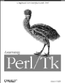

|  | By Nancy Walsh, O'Reilly & Associates. First edition January, 1999. ISBN: 1-56592-314-6.360 pages, give or take an ad. $32.95. |
"Perl/Tk's thickest man page"
Nancy Walsh's cumbersome man page Learning Perl/Tk brings order to an unruly niche in Perl pedagogy. For some time, Perl's Tk modules have been taught to the world by sporadic postings of pedantic newsgroup contributors who could interpret John Osterhout's treatise on Tcl/Tk through a Perlesque filter to less prescient hackers. Walsh's feature-by-feature translation of Tk's numerous options into the Perl syntax is a valuable contribution to the training archive. Its strongest technical point is the conscientious treatment of both WinNT/95 and Unix versions. All Perl modules should be so thoroughly investigated.
Nick Ing-Simmon's accolades on the cover notwithstanding, Walsh has chosen her readership to be newbie technicians. Although her game plan is a rigorous adherence to the command set, her writing is so informal that it never really gets out of bed. Confusing the cardinal Perl virtue of laziness with sloppiness, she uses a vague-and-friendly hand-holding style, and consequently, she compromises brevity and clarity. On Perl's origin: "Originally, Perl was written as a 'quick fix' to a problem Larry Wall was having with his job." Did Larry Wall really have a problem with his job that could be solved better by writing a scripting language than by retaining an employment lawyer? That's only the first page. She and her editors challenge the literal-minded reader on every one of the remaining 339 text pages.
By whittling her subject matter to its core command set, Walsh attaches the book directly to the Perl/Tk module itself. Her book will remain relevant as long as Tk is relevant in the Perl community. But how long will that be? She doesn't even begin to speculate. She omits historical and philosophical issues. Tk's author John Osterhout is never mentioned. Neither is the Tk module's contribution in the debate between Perl and Java. Partisan Perlism aside, Tk continues to be a big, slow-loading module that makes for an embarrassing pause at the beginning of every demo. (The basic_demo itself requires 10 seconds to load on my 90 MHz Pentium.) Is the static Perl/Tk executable any faster? Or a stripped down miniperl/Tk? Or is Tcl/Tk really the optimal way to use Tk? Walsh never comes close to these questions. Fortunately, there will always be newsgroups, and at least after Walsh, they won't be filled with quite so many novice questions.
With the past, the present, and the future off her plate, Walsh concentrates on the meat: listboxes, canvas widgets, sliders versus scroll bars, dynamic font selection, and so on. Priced at $33, it may be above the pain-point for the average hobbyist. Stephen Lidie's 98-page Perl/Tk Pocket Reference (also an O'Reilly book) is just as encyclopedic and far less verbose at only $10. Still, Walsh's work is well within the expense report limit for professional users, where it will most likely find its home. But will the book satisfy a professional readership? Experts need hand holding, too. Value: 3 out of 5. Utility: 4 out of 5. Overall: 3 out of 5.
As someone who knows Perl pretty well by now, has some experience using the MacPerl Toolbox modules to create GUIs, and has never used used Tk before, I wanted to be first in line to check out the new offering from O'Reilly. The bottom line is that whereas before I knew almost nothing about Tk, I now know enough to put together a fairly complex Perl/Tk application thanks to this book.
However, it could have been a better book, and I fear those not as knowledgeable about Perl as myself might have some trouble. The worst problem is the technical errors. They are not pervasive, but they are prevalent enough that I was no longer surprised by the end of the book when I saw them. Several times I saw the digraph operator (=>) used in place of the arrow operator (->). One regex switches the starting anchor (^) with another character. The Mainloop() function is called Mainloop in the text. Occasionally something little, that beginners won't notice, crops up in the text, and as much as I liked much of the book, there's no way around it: This kind of thing is Bad.
One unfortunate side effect of this is that when I saw something that I wasn't sure of -- such as a statement that a method returns an empty string in certain cases, when it seems to me that maybe it should return an empty list instead -- I don't know whether or not to trust the text.
On the less technical side of things, some of the sections seemed to be unable to decide if they wanted a tutorial or a reference. This is a fine line many tutorials are forced to walk. But the reference text sometimes broke up the flow of the tutorial and made it more difficult to read, especially knowing that I could just be looking at online documentation instead. The book seems geared toward those who might not know Perl very well, which is probably a good design decision, but it made the reading drag in spots; I tried to compensate by skipping ahead a paragraph or two, which sometimes led me to miss something important. I probably just need to get better at skipping ahead.
But despite all this, I think the book is a worthy candidate for someone needing to learn Perl/Tk, if they can tolerate a book that needs more editing. The book mostly flows well, the topics are introduced in a logical progression, and I seemed to learn what I needed to learn. Overall: 3 out of 5.
Utility: Aside from the reference table in the back, I probably won't refer to it much, but it did serve its purpose well. Value: I'd prefer the book to be priced a bit lower. It's listed at only $7 less than Perl Cookbook, which is twice the size and at least twice as useful. As a consumer, I think a price of $25 to $28 would be more reasonable.
I was a very good test subject for Learning Perl/Tk; I'm a tolerable Perl programmer with no knowledge of Tk. Even better, I was, like most Windows programmers, largely unfamiliar with the whole notion of geometry managers and other X-ish idioms.
This book can indeed teach such a person how to create a user interface with Perl/Tk, and is, as far as I know, the best way to learn this. The style is clear and readable, avoiding the twin hazards of being too dry and being too saucy, and most concepts are illustrated with concise, well-chosen examples. However, it is not without annoyances.
First of all, I amassed a fair-sized list of errors that have not appeared in the errata. Many of these are typos where the original intent is easy to divine, but some are very confusing content errors. There is a recurring problem with references to subjects not yet covered -- we should at least learn where they will be discussed. In some cases, they're never discussed at all.
But besides that, I wish the book had been organized differently. It attempts to be both a tutorial and a reference. Early chapters cover a series of widgets in great detail. I'd have preferred a tutorial that showed how to perform common tasks with them, without describing every option. The reference chapters could come later. As it is, I was often tempted to do a lot of skimming (and would have if I were not reviewing it), which is fine for a reference but not for a tutorial.
Even so, the book has much to recommend. The discussion of geometry management was exceptionally well presented and, given the importance of the topic, very welcome and helpful. The book does an excellent job of navigating the cross-platform issues, something often omitted from Perl books. If you want to learn Perl/Tk, this is the place to go.
Perl/Tk is a great addition to the Perl modules list, and a rather involved one -- providing the full functionality of Tk with Perl bindings is no mean feat, and Nick Ing-Simmons and his helpers are to be lauded for their great work. Tk800.014.tar.gz weighs in at 3,206 KB on CPAN in compressed form, and is one of the more complex Perl modules in existence.
That being said, let's turn to Learning Perl/Tk by Nancy Walsh. The author is faced with a formidable task -- make one of Perl's biggest and most complicated tools accessible to a reader who knows little about it, but may be versed in Perl. When I saw that this book was forthcoming, I had to sit on my hands in anticipation.
The documentation bundled with Perl/Tk itself is useful if you already know Tk, or if you know what you're looking for. But it can be a twisty maze of method calls, all different, if you don't know where to start. The thought of a solid tutorial through the forbidding topics of Tk seemed quite attractive -- even given the widget demo, with its live code and examples, and the Perl/Tk documentation. When the book finally came, I was excited. The author has a clear voice and a gentle touch, and the first chapters were a good read. However, as I got into it farther, I started to get the feeling that this book didn't know what it wanted to be -- a tutorial or a reference. As a reference, it is not easy to get to where you want to be right away -- it's not a nutshell book, and it's not the Perl/Tk Reference (also from O'Reilly).
This book does play better as a tutorial (thus the title "Learning Perl/Tk") but it could benefit from a more coherent set of examples. The examples given were helpful, and I did learn a good bit from them, but after I had finished the book and attempted a nontrivial programming task, I found there were basic holes in my knowledge -- partly because I failed to catch important points, and partly because some things were not covered (for instance, when and why do you use @ at the beginning of a path?). I would like to have seen an application built throughout the entire book, where each chapter adds to the application, and as a coherent set of examples that could be viewed in context. Something like that would be nice, so you can see how each part fits into the whole large application, and fiddle with parts of a working app.
In summary, I found this book to be good and useful. There was some clunkiness that goes along with being a first edition (several things are used before before they are explained, and there are some typos and layout blips). But all in all, this book was a much better introduction than struggling through the manual pages. I do recommend it, and I expect to see it polished over future editions.